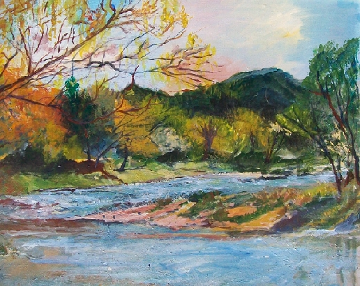

En la mañana soleada te recorro,
por caminos agrestes voy andando,
entre el ripio y la arena voy llegando,
a Achiras Arriba, y el paisaje,
se va renovando a cada instante.
Trato de registrar en mi retina,
cada color, cada momento,
así también las piedras redondeadas,
por el agua y el viento de los tiempos.
Los olores que brotan de tus plantas,
en esa enorme variedad que tú posees,
el colorido inicial de primavera,
que ya imagino trasladándola a una tela.
En lo alto de estas bellas serranías,
con la guardia perenne majestuosa,
del Champaqui, ícono legítimo,
de este lugar de ensueños y alegrías,
encuentro que cruzan saltarinas,
el angosto camino varias cabras,
introduciéndose en el monte;
pero, una pequeña se ha quedado,
sin poder alcanzar a la majada
y expresa su dolor en un balido;
entonces todas las que saltaban
presurosas, detienen su corrida
y esperan a la pequeña rezagada,
en un acto solidario de ternura.
 "Sierras de Córdoba" Pintura en acrílico, Graciela M. Casartelli. |
Dejo los altos y me introduzco, Son los dueños de las piedras, |
Voy llegando en mi periplo placentero,
a la Barranca de los Loros,
ya siento en el aire el sonido,
del canto agudo de las verdes aves,
que en extraña comunidad
en este lugar se encuentran,
y habitan con sus nidos, dándole al espacio,
que son dueños, un color especial y otro sonido.
Me detengo a contemplar lo curioso
que resulta ver el paisaje tan distinto,
pero hay que reconocer también en esto,
que el Creador ha puesto sabiamente
cada cosa en el lugar preciso.
Regreso a la serena urbanidad
de San Javier, lugar de ensueño,
al bullicio y la inocencia de mis nietos
que me llenan de besos y alegrías.
Ya pronto me iré de tu belleza,
retornaré a mi natal espacio,
a otro bullicio, a otra gente,
a los amigos, también otros amores,
pero sé que aunque me vaya presto,
aquí se quedaran mis ilusiones,
de no apartarme jamás de tu belleza,
y beber cada instante de tus días,
del colorido distinto y los sonidos,
que entre tus sierras y tus riachos,
en estos pocos días me brindaste.
Vine en busca de soledad y me la diste,
también la paz que yo necesitaba,
el reencuentro con mis nietos y mis hijos,
que me colmaron de alegría y de ternura.
Ahora me voy después de haber bebido,
el dulce vino de tu natural belleza.
Pero no, no me voy, aquí me quedo;
con mis sentidos y mi gozo adquirido,
o mejor dicho con la alegría que he robado,
a la bondad de tus sierras y tu gente.
Autor:Juan Carlos Iribarren
Septiembre de 2008
Musicalización "Amor perdóname" mid